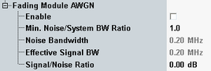

Fading Module AWGN
The following parameters enable and configure the AWGN insertion on the fading module. For background information, see "AWGN Generator".

AWGN settings
Enables/disables AWGN insertion via the fading module.
Remote command:Configures the minimum ratio between the noise bandwidth and the GSM downlink channel bandwidth (200 kHz).
Remote command:Displays the actual noise bandwidth, resulting from the "Min. Noise/System BW Ratio" and the fixed signal bandwidth.
Remote command:For GSM, the effective signal bandwidth equals 200 kHz (width of one downlink channel).
Specifies the signal to noise ratio.
Remote command: